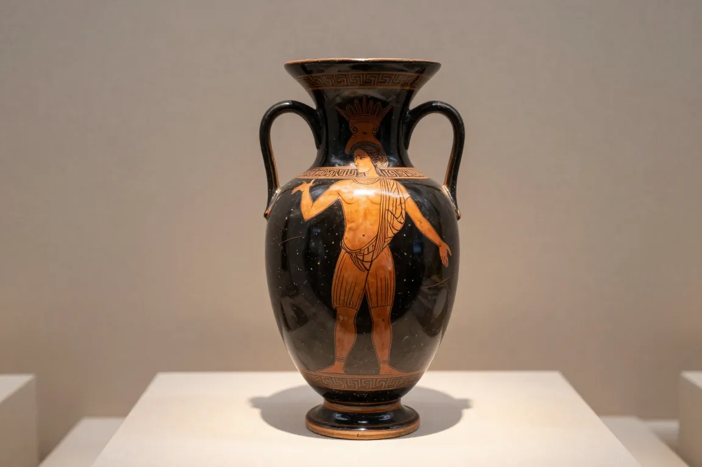

keramikk · c. 530–320 BC · også: Attisk rødfigur, Rødfigur-vasemaleri
Greske vaser der bakgrunnen er sort glans og figurene beholder leirens røde farge. Maleren tegner de indre linjene med pensel, så figurene ser rundere og friere ut.

Kjerneidé
En vase er et felt for den tegnede menneskekroppen: figuren beholder leirens farge, og penselstreken gir den vekt, bevegelse og følelse.
Designprinsipper
Spar ut figurene i den røde leiren og mal hele bunnen i sort glans.
Tegn de indre linjene med pensel i relieffinjer, tykke og hevede, for hovedkonturene.
Bruk tynnere, utvannede linjer for muskler, hår og draperier.
Vis kroppen i trekvartvisning, vridd og forkortet.
Ramm inn bildet med en meander eller en palmettbord, og en enkel sort vegg under.
Plasser én eller to figurer i rundelen i en kopp, slik at sirkelen holder positurene.
Brenn i tre trinn, oksidasjon, reduksjon og ny oksidasjon, for å feste sort og rødt.
Antimønstre
Sorte silhuetter med innrissede detaljer på rød bunn